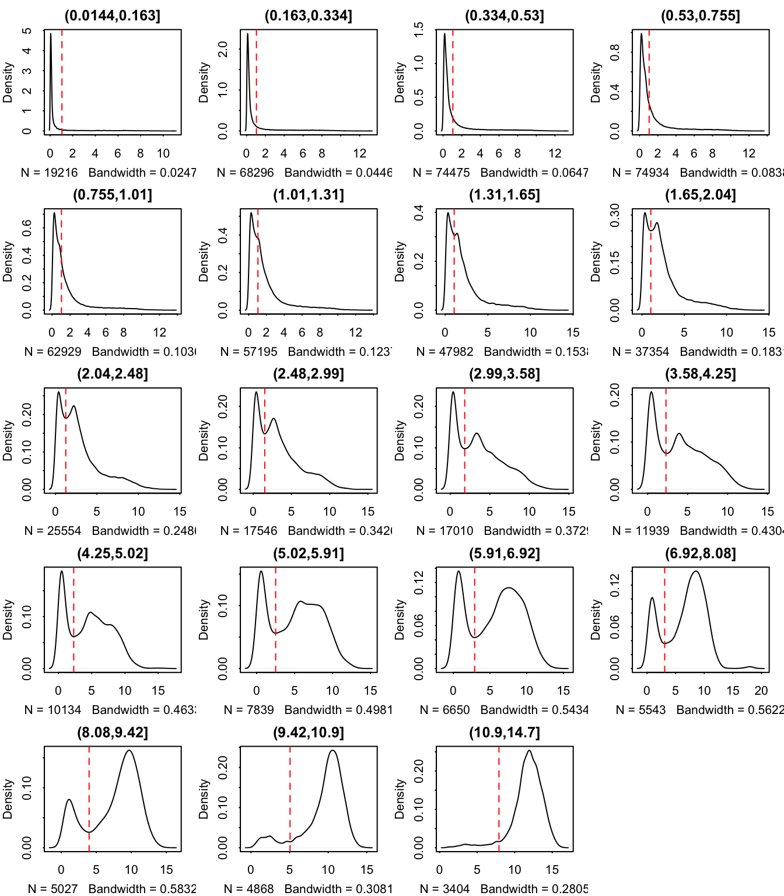
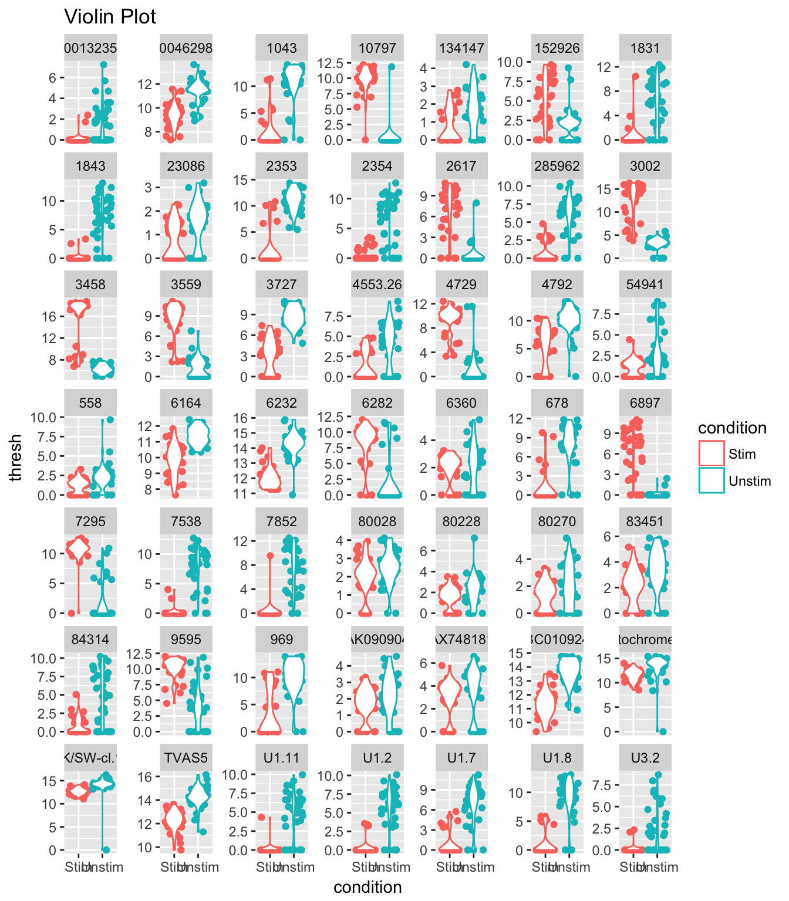
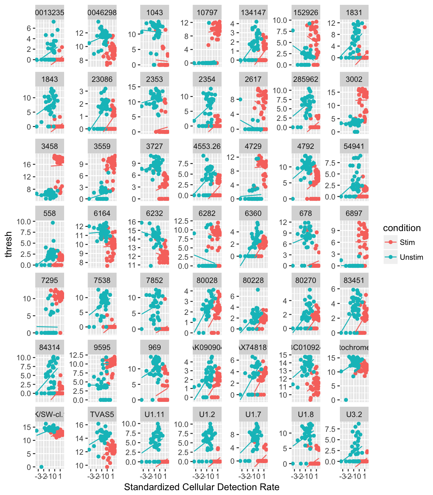
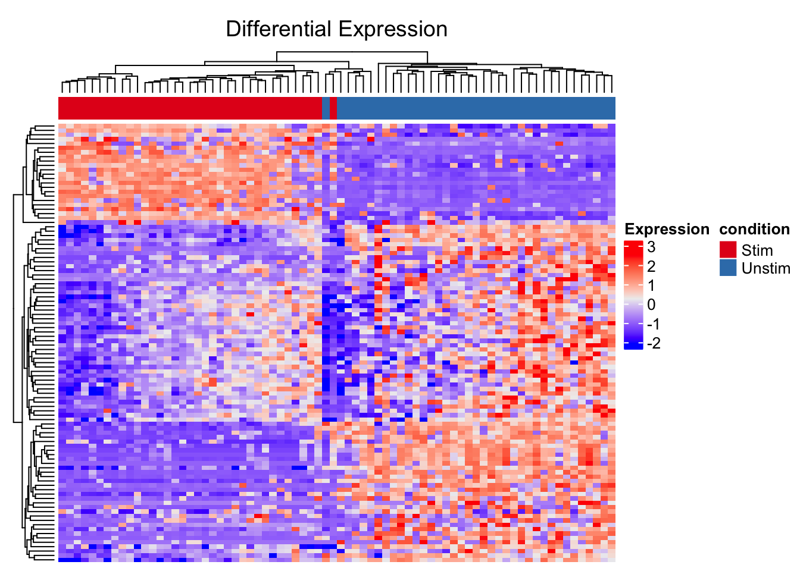
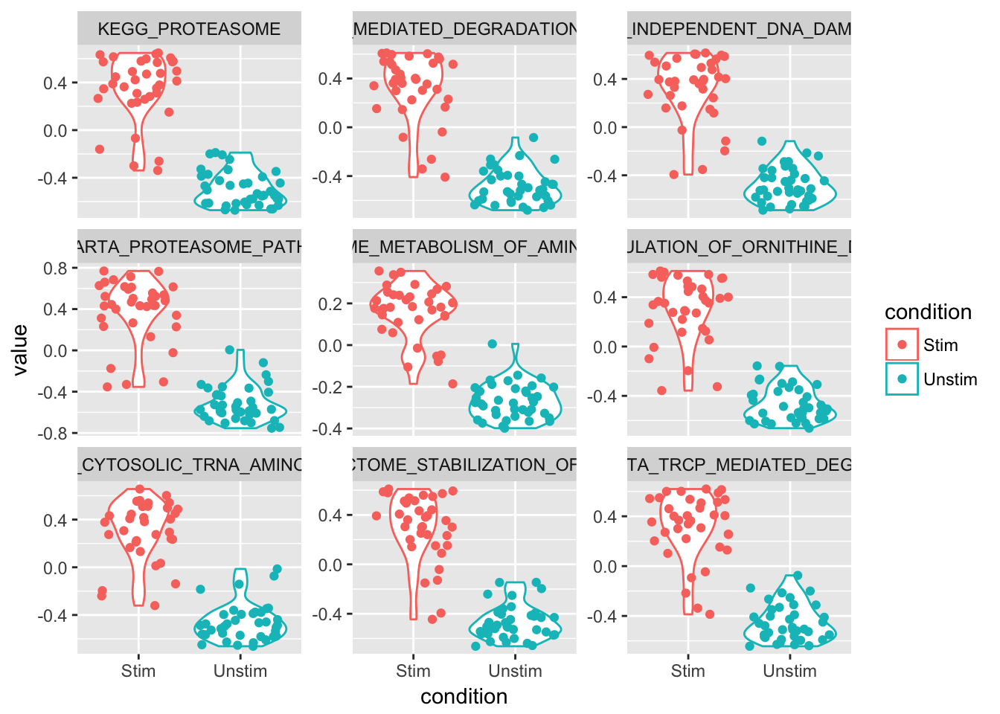
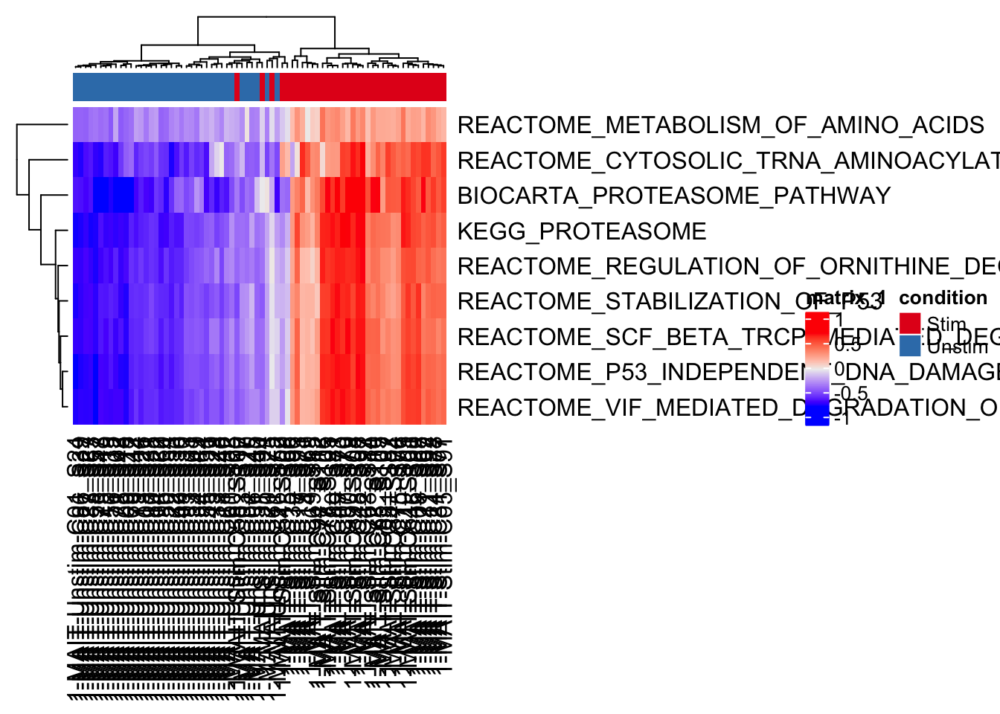

MAITS intro
library(singleCellTK)
library(DT)
data("maits_sce")You can get summary metrics with the summarizeTable function:
datatable(summarizeTable(maits_sce))Explore the available annotations in the data:
colnames(colData(maits_sce))## [1] "wellKey" "condition" "nGeneOn"
## [4] "libSize" "PercentToHuman" "MedianCVCoverage"
## [7] "PCRDuplicate" "exonRate" "pastFastqc"
## [10] "ncells" "ngeneson" "cngeneson"
## [13] "TRAV1" "TRBV6" "TRBV4"
## [16] "TRBV20" "alpha" "beta"
## [19] "ac" "bc" "ourfilter"table(colData(maits_sce)$ourfilter)##
## FALSE TRUE
## 22 74The data has a filtered dataset with 74 ‘pass filter’ samples, let’s subset the data to include the pass filter samples
maits_subset <- maits_sce[, colData(maits_sce)$ourfilter]
table(colData(maits_subset)$ourfilter)##
## TRUE
## 74datatable(summarizeTable(maits_subset))reducedDims(maits_subset)## List of length 4
## names(4): PCA_counts PCA_logcounts TSNE_counts TSNE_logcountsthresholds <- thresholdGenes(maits_subset)## `fData` has no primerid. I'll make something up.## (0.0144,0.163] (0.163,0.334] (0.334,0.53] (0.53,0.755] (0.755,1.01]
## 1.048076 1.048076 1.048076 1.048076 1.048076
## (1.01,1.31] (1.31,1.65] (1.65,2.04] (2.04,2.48] (2.48,2.99]
## 1.048076 1.048076 1.048076 1.243318 1.515176
## (2.99,3.58] (3.58,4.25] (4.25,5.02] (5.02,5.91] (5.91,6.92]
## 1.841511 2.293826 2.293826 2.505690 2.909298
## (6.92,8.08] (8.08,9.42] (9.42,10.9] (10.9,14.7]
## 3.091104 3.978445 5.059031 7.900775par(mfrow = c(5, 4))
plot(thresholds)
par(mfrow = c(1, 1))
mast_results <- MAST(maits_subset, condition = "condition", usethresh = TRUE,
use_assay = "logcounts")## (0.0144,0.163] (0.163,0.334] (0.334,0.53] (0.53,0.755] (0.755,1.01]
## 1.048076 1.048076 1.048076 1.048076 1.048076
## (1.01,1.31] (1.31,1.65] (1.65,2.04] (2.04,2.48] (2.48,2.99]
## 1.048076 1.048076 1.048076 1.243318 1.515176
## (2.99,3.58] (3.58,4.25] (4.25,5.02] (5.02,5.91] (5.91,6.92]
## 1.841511 2.293826 2.293826 2.505690 2.909298
## (6.92,8.08] (8.08,9.42] (9.42,10.9] (10.9,14.7]
## 3.091104 3.978445 5.059031 7.900775## ....................................................................................................................................................................................................................................................................................................................................................................................................................................................................
## Done!
## Combining coefficients and standard errors
## Calculating log-fold changes
## Calculating likelihood ratio tests
## Refitting on reduced model...
## ....................................................................................................................................................................................................................................................................................................................................................................................................................................................................
## Done!MASTviolin(maits_subset, fcHurdleSig = mast_results, threshP = TRUE, variable = "condition")## `fData` has no primerid. I'll make something up.## (0.0144,0.163] (0.163,0.334] (0.334,0.53] (0.53,0.755] (0.755,1.01]
## 1.048076 1.048076 1.048076 1.048076 1.048076
## (1.01,1.31] (1.31,1.65] (1.65,2.04] (2.04,2.48] (2.48,2.99]
## 1.048076 1.048076 1.048076 1.243318 1.515176
## (2.99,3.58] (3.58,4.25] (4.25,5.02] (5.02,5.91] (5.91,6.92]
## 1.841511 2.293826 2.293826 2.505690 2.909298
## (6.92,8.08] (8.08,9.42] (9.42,10.9] (10.9,14.7]
## 3.091104 3.978445 5.059031 7.900775
MASTregression(maits_subset, fcHurdleSig = mast_results, threshP = TRUE, variable = "condition")## `fData` has no primerid. I'll make something up.## (0.0144,0.163] (0.163,0.334] (0.334,0.53] (0.53,0.755] (0.755,1.01]
## 1.048076 1.048076 1.048076 1.048076 1.048076
## (1.01,1.31] (1.31,1.65] (1.65,2.04] (2.04,2.48] (2.48,2.99]
## 1.048076 1.048076 1.048076 1.243318 1.515176
## (2.99,3.58] (3.58,4.25] (4.25,5.02] (5.02,5.91] (5.91,6.92]
## 1.841511 2.293826 2.293826 2.505690 2.909298
## (6.92,8.08] (8.08,9.42] (9.42,10.9] (10.9,14.7]
## 3.091104 3.978445 5.059031 7.900775
plot_DiffEx(maits_subset, use_assay = "logcounts", condition = "condition",
geneList = mast_results$Gene[1:100],
annotationColors = "auto",
displayRowLabels = FALSE, displayColumnLabels = FALSE)
gsva_res <- GSVA_sce(maits_subset, "logcounts",
"MSigDB c2 (Human, Entrez ID only)",
c("KEGG_PROTEASOME",
"REACTOME_VIF_MEDIATED_DEGRADATION_OF_APOBEC3G",
"REACTOME_P53_INDEPENDENT_DNA_DAMAGE_RESPONSE",
"BIOCARTA_PROTEASOME_PATHWAY",
"REACTOME_METABOLISM_OF_AMINO_ACIDS",
"REACTOME_REGULATION_OF_ORNITHINE_DECARBOXYLASE",
"REACTOME_CYTOSOLIC_TRNA_AMINOACYLATION",
"REACTOME_STABILIZATION_OF_P53",
"REACTOME_SCF_BETA_TRCP_MEDIATED_DEGRADATION_OF_EMI1"),
parallel.sz=1)## Loading required package: GSEABase## Loading required package: annotate## Loading required package: AnnotationDbi## Loading required package: XML## Loading required package: graph##
## Attaching package: 'graph'## The following object is masked from 'package:XML':
##
## addNode## Warning in .local(expr, gset.idx.list, ...): 157genes with constant
## expression values throuhgout the samples.## Warning in .local(expr, gset.idx.list, ...): Since argument method!
## ="ssgsea", genes with constant expression values are discarded.## Estimating GSVA scores for 9 gene sets.
## Computing observed enrichment scores
## Estimating ECDFs in microarray data with Gaussian kernels
## Using parallel with 1 cores
##
|
| | 0%
|
|======= | 11%
|
|============== | 22%
|
|====================== | 33%
|
|============================= | 44%
|
|==================================== | 56%
|
|=========================================== | 67%
|
|=================================================== | 78%
|
|========================================================== | 89%
|
|=================================================================| 100%GSVA_plot(maits_subset, gsva_res, "Violin", "condition")
GSVA_plot(maits_subset, gsva_res, "Heatmap", "condition")
It is possible to use ComBat within the Single Cell Toolkit. This support is experimental, since ComBat was not designed for scRNA-Seq. Here, we will load the bladderbatch example data into a SingleCellExperiment object.
library(bladderbatch)
data(bladderdata)
dat <- bladderEset[1:50,]
pheno = pData(dat)
edata = exprs(dat)
bladder_sctke <- createSCE(assayfile = edata,
annotfile = pheno,
assay_name = "microarray",
inputdataframes = TRUE,
create_logcounts = FALSE)
assay(bladder_sctke, "combat") <- ComBat_SCE(SCEdata = bladder_sctke,
batch = "batch",
use_assay = "microarray",
covariates = "cancer")## Found5batches## Adjusting for2covariate(s) or covariate level(s)## Standardizing Data across genes## Fitting L/S model and finding priors## Finding parametric adjustments## Adjusting the Data## R version 3.4.3 (2017-11-30)
## Platform: x86_64-apple-darwin15.6.0 (64-bit)
## Running under: macOS High Sierra 10.13.3
##
## Matrix products: default
## BLAS: /Library/Frameworks/R.framework/Versions/3.4/Resources/lib/libRblas.0.dylib
## LAPACK: /Library/Frameworks/R.framework/Versions/3.4/Resources/lib/libRlapack.dylib
##
## locale:
## [1] en_US.UTF-8/en_US.UTF-8/en_US.UTF-8/C/en_US.UTF-8/en_US.UTF-8
##
## attached base packages:
## [1] parallel stats4 stats graphics grDevices utils datasets
## [8] methods base
##
## other attached packages:
## [1] bladderbatch_1.16.0 GSEABase_1.40.1
## [3] graph_1.56.0 annotate_1.56.1
## [5] XML_3.98-1.10 AnnotationDbi_1.40.0
## [7] DT_0.4 singleCellTK_0.4.6
## [9] SingleCellExperiment_1.0.0 SummarizedExperiment_1.8.1
## [11] DelayedArray_0.4.1 matrixStats_0.53.1
## [13] Biobase_2.38.0 GenomicRanges_1.30.3
## [15] GenomeInfoDb_1.14.0 IRanges_2.12.0
## [17] S4Vectors_0.16.0 BiocGenerics_0.24.0
##
## loaded via a namespace (and not attached):
## [1] splines_3.4.3 bit64_0.9-7 jsonlite_1.5
## [4] shiny_1.0.5 blob_1.1.0 GenomeInfoDbData_1.0.0
## [7] yaml_2.1.16 pillar_1.2.1 RSQLite_2.0
## [10] backports_1.1.2 lattice_0.20-35 limma_3.34.9
## [13] digest_0.6.15 RColorBrewer_1.1-2 XVector_0.18.0
## [16] colorspace_1.3-2 htmltools_0.3.6 httpuv_1.3.5
## [19] Matrix_1.2-12 plyr_1.8.4 GetoptLong_0.1.6
## [22] genefilter_1.60.0 zlibbioc_1.24.0 xtable_1.8-2
## [25] scales_0.5.0 BiocParallel_1.12.0 tibble_1.4.2
## [28] GSVA_1.26.0 mgcv_1.8-23 ggplot2_2.2.1
## [31] lazyeval_0.2.1 survival_2.41-3 magrittr_1.5
## [34] mime_0.5 memoise_1.1.0 evaluate_0.10.1
## [37] nlme_3.1-131.1 MAST_1.4.1 tools_3.4.3
## [40] data.table_1.10.4-3 GlobalOptions_0.0.12 ComplexHeatmap_1.17.1
## [43] stringr_1.3.0 munsell_0.4.3 compiler_3.4.3
## [46] rlang_0.2.0 grid_3.4.3 RCurl_1.95-4.10
## [49] rjson_0.2.15 htmlwidgets_1.0 circlize_0.4.3
## [52] crosstalk_1.0.0 bitops_1.0-6 labeling_0.3
## [55] rmarkdown_1.8 gtable_0.2.0 abind_1.4-5
## [58] DBI_0.7 reshape2_1.4.3 R6_2.2.2
## [61] knitr_1.20 bit_1.1-12 shinythemes_1.1.1
## [64] rprojroot_1.3-2 shape_1.4.4 stringi_1.1.6
## [67] sva_3.26.0 Rcpp_0.12.15 geneplotter_1.56.0